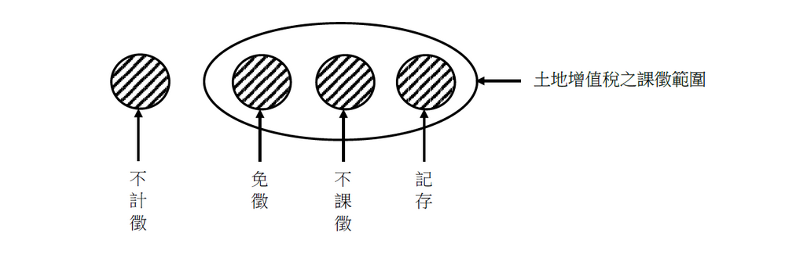

主題精選：地上權¶
共收錄 19 篇文章。
1. 不計徵土地增值稅之意涵¶
發布日期: 2025-06-19
內文¶
• (一) 不計徵土地增值稅之意義： 亦稱不徵土地增值稅；指不在土地增值稅之課徵範圍，因此不必徵收土地增值稅。
• (二) 不計徵土地增值稅與免徵土地增值稅之比較：
-
不計徵土地增值稅，指不在土地增值稅之課徵範圍，故不必課徵土地增值稅。免徵土地增值稅，指在土地增值稅之課徵範圍，故應課徵土地增值稅，但給予租稅免除。
-
不計徵土地增值稅，其原地價未更動，租稅效果等同「不課徵土地增值稅」（即租稅遞延）。免徵土地增值稅，其原地價必須更動，租稅效果為租稅免除。
• (三) 舉例說明：
-
土地增值稅之課徵時機為移轉（指土地所有權移轉）及設定典權。準此，設定地上權及地上權移轉不在土地增值稅之課徵範圍。因此,設定地上權及地上權移轉不計徵土地增值稅。但不宜敍述為「設定地上權及地上權移轉免徵土地增值稅或不課徵土地增值稅」。
-
平均地權條例施行細則第87條第1項規定：「土地所有權人依本條例第六十條負擔之公共用地及抵費地，不計徵土地增值稅，逕行登記為直轄市、縣（市）有。但由中央主管機關辦理者，抵費地登記為國有。」市地重劃之原土地所有權人交換分合土地，原本屬於土地移轉，應課徵土地增值稅。但平均地權條例第62條本文規定：「市地重劃後，重行分配與原土地所有權人之土地，自分配結果確定之日起，視為其原有之土地。」亦即，市地重劃之原土地所有權人交換分合後所取得之土地，視為其原有土地，等同未移轉土地。因此，市地重劃交換分合之土地，不計徵土地增值稅。同理，原土地所有權人所負擔之公共用地及抵費地，亦為交換分合之一部分，因此不計徵土地增值稅。
[圖片1]
文章圖片¶

注：本文圖片存放於 ./images/ 目錄下
2. 共有人占用共有土地之爭議¶
發布日期: 2025-03-04
內文¶
甲主張其於所有之A地上建造B屋（未登記建物）使用，迄今逾70年，A地共有人乙、丙、丁從未異議，顯存默示分管契約。況於A地上興建B屋，亦已時效取得地上權，是甲並非無權占有，其他共有人自不得請求拆屋還地、給付損害賠償。是否有理由？
-
請求權基礎（訴之標的） 各共有人得按其應有部分，對於共有物之全部，有使用收益之權，民法第818 條定有明文，係指各共有人得就共有物全部，於無害他共有人之權利限度內，可按其應有部分行使用益而言。是共有人對共有物之特定部分占有使用收益，仍須徵得他共有人全體之同意，非謂共有人得對共有物之任何一部或全部有自由使用、收益之權利。如共有人不顧他共有人之利益，而就共有物之一部或全部任意占有收益，即屬侵害共有人之權利，共有人除得依同法第767條第1項前段、第821條規定，請求除去其妨害及向全體共有人返還共有物外，並得依侵權行為法律關係，請求該無權占有之人按共有人就共有物之應有部分比例，賠償共有人所受損害。
-
默示分管及時效取得地上權之爭議 (1)證人審理時，並未證述共有人甲建造B屋時，業經A地其他共有人同意等情。 (2)A地共有人乙、丙、丁對甲占有A地未為爭執反對，其原因多端，不得僅憑甲長期公然繼續占有A地，逕謂其他共有人已同意或默示同意其占有。 (3)甲既謂其基於分管契約或默示分管契約之意思而占有A地，顯然欠缺行使地上權之主觀意思，況甲縱經地上權取得時效完成，亦僅得請求登記為地上權人而已，在未登記為地上權人前，不得本於地上權關係否認非無權占有。
-
判決結果 甲為B屋之事實上處分權人，其並無基於時效取得地上權而占有A地之主觀意思，無請求登記為地上權人之權利，且未能證明A地他共有人全體同意將B屋所在之A地特定部分交甲占有使用。是乙、丙、丁依上開規定，請求甲拆屋還地，並按乙、丙、丁各就A地所持應有部分比例，賠償乙、丙、丁所受損害，核屬權利之正當行使……。
資料來源：最高法院109年度台上字第2037號民事判決（本案已確定）
注：本文圖片存放於 ./images/ 目錄下
3. 共有土地分管下之優先購買權¶
發布日期: 2025-02-27
內文¶
甲、乙、丙三人共有一筆土地，應有部分相等，甲、乙、丙三人訂立分管契約，分管之特定位置分別為該筆土地之A、B、C部分。今，甲將其分管之特定位置A設定地上權予丁，丁並於其上興建房屋一棟；乙將其分管之特定位置B出租予戊，戊並於其上興建房屋一棟；丙自行使用其分管特定位置C。
• (一) 甲出售其應有部分三分之一，何人有優先購買權？
-
丁依據土地法第104條規定，得主張優先購買權。
-
乙、丙二人依據土地法第34條之1第4項規定，得主張優先購買權。
-
土地法第104條之優先購買權具有物權效力，土地法第34條之1第4項之優先購買權僅具債權效力，因此丁之優先購買權先於乙、丙二人之優先購買權而行使。
-
戊無優先購買權。因為戊與甲之間無地上權、典權或租賃權關係存在。
• (二) 戊出售其房屋時，何人有優先購買權？
-
乙依據土地法第104條規定，得主張優先購買權。
-
甲、丙二人無優先購買權。因為甲、丙二人與戊之間無地上權、典權或租賃權關係存在。
• (三) 甲、乙二人運用土地法第34條之1第1項規定，將該筆土地全部出售時，何人有優先購買權？
-
丁基於土地法第104條規定之「同樣條件」，得就該筆土地全部主張優先購買權。
-
戊基於土地法第104條規定之「同樣條件」，得就該筆土地全部主張優先購買權。
-
丙依據土地法第34條之1第4項規定，得就該筆土地全部主張優先購買權。
-
土地法第104條之優先購買權具有物權效力，土地法第34條之1第4項之優先購買權僅具債權效力，因此，丁、戊二人之優先購買權先於丙而行使。
-
丁、戊二人之優先購買權皆具有物權效力，依登記（指地上權）或成立（指租賃權）先後定其行使之優先順序。
注：本文圖片存放於 ./images/ 目錄下
4. 時效取得地上權之主觀意思要件探討¶
發布日期: 2025-02-25
內文¶
• A. 地占有人甲主張：甲父乙自民國43年起，即在A地上建築房舍，甲自幼亦在該房地居住，從未遷居，乙於四十餘年間在A地上建造房屋時，即已知房屋主體結構之一部分坐落在A地上，足見甲與其父乙在主觀上均以行使地上權之意思，客觀上並以在他人土地上建築房屋使用他人土地，繼續占有已逾四十年，自因時效完成，而得請求登記為地上權人。試問有否理由？亦即是否於他人土地上興建房屋即認主觀上有以行使地上權之意思？
首先，根據土地登記行政實務，土地登記規則第118條規定：「土地總登記後，因主張時效完成申請地上權登記時，應提出以行使地上權意思而占有之證明文件及占有土地四鄰證明或其他足資證明開始占有至申請登記時繼續占有事實之文件。」顯示行政實務來看，如無法提出主觀上曾以行使地上權意思而占有之證明文件是無法直接辦理時效取得地上權之登記的。
其次，從司法實務而言，則有不同見解。 以下列案例而言，特別的是，最高法院認定應由占有人舉證其行使地上權之意思，並發回更審。但高等法院台南分院仍認為其於該土地上建造建築物與單純占有有別，難謂占有人於占有之始無行使地上權之意思。
• T. ABLE_PLACEHOLDER_1
注：本文圖片存放於 ./images/ 目錄下
5. 地上權房屋與使用權房屋¶
發布日期: 2025-02-20
內文¶
現行對於大塊完整之公有土地，如無公共用途，政府儘量不標售所有權，而是招標設定地上權給民間使用，以增加國庫收入及促進公地利用。
建設公司標得地上權後，興建房屋出售於一般民眾。因此，一般民眾買到的房屋，可區分為二種，一種為地上權房屋，另一種為使用權房屋。
• (一) 地上權房屋：政府之招標文件未限制地上權分割移轉，則建設公司出售建物所有權及其地上權應有部分予購屋者。此即「地上權房屋」。因此，購屋者對該房屋擁有物權（即建物所有權及其地上權應有部分）。坊間，台北市「台北花園案」、台北市「基泰大安案」等是。
• (二) 使用權房屋：政府之招標文件限制地上權分割移轉，致建設公司無法出售建物所有權及其地上權應有部分予購屋者（公寓大廈管理條例第4條第2項規定，專有部分不得與其所屬建築物共用部分之應有部分及其基地所有權或地上權之應有部分分離而為移轉或設定負擔），則建設公司只能出售建物及其土地之使用權予購屋者。建物所有權及其地上權仍保留在建設公司手中。此即「使用權房屋」。因此，購屋者對該房屋只擁有債權（即建物使用權及土地使用權）。坊間，台北市「京站案」、台北市「華固新天地案」等是。
綜上，地上權房屋才是正統，使用權房屋是地上權無法分割移轉下之變通產物。
房屋稅條例第5條第1項第1款第1目所稱「以土地設定地上權之使用權房屋」，包括地上權房屋及使用權房屋二種。
注：本文圖片存放於 ./images/ 目錄下
6. 多數決創設地上權人、典權人後他共有人仍有優先購買權之意涵¶
發布日期: 2024-10-15
內文¶
• (一) 土地法第34條之1與第104條規定
-
根據土地法第三十四條之一執行要點第12點第1項：「部分共有人依本法條第一項規定出賣共有土地或建物時，他共有人得以出賣之同一條件共同或單獨優先購買。」亦即多數共有人利用多數決出賣整筆共有不動產時，為保障少數人權益，仍給予其機會進行優先購買。
-
另外，按土地法第104條規定：「基地出賣時，地上權人、典權人或承租人有依同樣條件優先購買之權。房屋出賣時，基地所有權人有依同樣條件優先購買之權。其順序以登記之先後定之 (第一項)。前項優先購買權人，於接到出賣通知後十日內不表示者，其優先權視為放棄。出賣人未通知優先購買權人而與第三人訂立買賣契約者，其契約不得對抗優先購買權人 (第二項)。」
• (二) 優先購買權競合之處理原則
-
依照學說看法：物權性質優先購買權優先於債權性質優先購買權。
-
依照執行要點第13點第6款，土地法第34條之1之優先購買權與土地法第104條之優先購買權競合時，應優先適用土地法第104條。
• (三) 多數決創設地上權人、典權人後他共有人仍有優先購買權之意涵
-
執行要點第12點第4項：「部分共有人依本法條第一項規定設定地上權或典權後出賣土地，他共有人仍有第一項優先購買權之適用。」
-
修法理由：「本法條之立法意旨並非以損害少數共有人權益為目的，如先依本法條規定辦理土地之地上權或典權設定，部分共有人再依本法條第一項規定出售該共有土地時，考量該地上權人或典權人已取得之權利仍存在於該土地上，尚不因土地所有權人之不同而受影響，參照內政部八十七年九月九日台內地字第八七七八二六六號函意旨，仍應通知他共有人是否願意優先購買，爰增訂第四項規定。」
-
87年台內地字第8778266號函：「查土地法第三十四條之一執行要點第10點第1款規定：共有土地之共有人依土地法第34條之1出售共有土地時，應先就其應有部分通知他共有人是否願意優先購買，此係為平衡共有土地共有人間之權益所為之規定。本案共有土地之地上權係由部分共有人依土地法第34條之1所為之設定，現部分共有人擬依土地法第34條之1再出售共有土地予地上權人。鑒於前依土地法第34條之1為地上權設定時，少數他共有人並未有優先設定之權利，對他共有人權益之均衡，顯有立法上之缺失，且探究土地法第34條之1之立法意旨係為促進共有土地之合理利用，並非以損害少數共有人權益為目的，其為兼顧共有人間權益之均衡，乃設優先購買權之規定，又本案如由共有人優先購買取得全部所有權，該地上權人已取得之地上權仍存在於該土地上，尚不因土地所有權人之不同而受影響。復基於本案土地前後辦理地上權設定及出售均係依土地法第三十四條之一規定所為之設定及處分，自應依土地法第34條之1之立法意旨優先探究其共有人間權益之均衡，故本案共有土地雖已設定地上權，於部分共有人依上開規定再行出售其共有土地時，應先就其應有部分通知他共有人是否願意優先購買，如有爭執，再循司法途徑解決。」
-
綜上，本條主要意思應只有提到用多數決設定地上權、典權後，因為「有可能」是故意創造出土地法第104條的優先購買權人出來，然後用物權大於債權方式，讓共有人完全無主張機會，因為競合時原則上土地法第104條應優先適用，因而過去很多人利用此方式先多數決虛假創設地上權、典權人出來，然後就直接以他們欲優先購買而就不需詢問其他共有人，等同於透過物權優先於債權的原則，架空共有人的優先購買權。換言之，此規定是說共有人仍有權利主張，但「並沒有」說就是違反競合原則，直接明確提到土地法第34條之1會優先於土地法第104條，而回到上述立法說明來看，只是強調多數共有人除地上權人外，也必須詢問他共有人是否願意優先購買（不可只問土地法第104條的地上權、典權人），當雙方都願意優先購買而產生爭議時（例如共有人認定多數人與少數共有人有通謀虛偽問題），就去訴訟決定。因此，物權大於債權之原則應並未突破。
-
此外，應注意的是，如果地上權人、典權人當初是全體同意設定的，那多數決出賣共有土地時，倘若地上權人、典權人已主張優先購買，就不需依執行要點第12點第4項再通知少數共有人。其原因係該地上權、典權即無通謀問題。
注：本文圖片存放於 ./images/ 目錄下
7. 依土地法第34條之1第1項設定地上權或典權後再出賣土地之優先購買權¶
發布日期: 2023-11-16
內文¶
部分共有人依土地法第34條之1第1項規定設定地上權或典權後，再依土地法第34條之1第1項規定出賣土地，他共有人有土地法第34條之1之優先購買權（土地法第三十四條之一執行要點第12點第4項）。析言之：
• (一) 部分共有人依土地法第34條之1第1項規定設定地上權或典權，他共有人無優先承受權。但，部分共有人依土地法第34條之1第1項規定出賣土地，他共有人有優先承受權。
• (二) 上開優先購買權之行使，如與土地法第104條或民法第919條之優先購買權競合時，因土地法第104條及民法第919條之優先購買權具有物權效力，土地法第34條之1之優先購買權僅具債權效力，因此土地法第104條及民法第919條之優先購買權優先行使。
茲舉二例說明：
• (一) 甲、乙、丙三人共有一筆土地，應有部分均等。甲、乙二人同意設定地上權於丁，丙表示反對，於是甲、乙二人依土地法第34條之1第1項多數決設定地上權於丁。嗣，甲、乙二人同意出賣該土地於戊，丙表示反對，於是甲、乙二人又依土地法第34條之1第1項多數決出賣於戊。
-
如丁在該土地上無房屋建築存在，則丁無土地法第104條之優先購買權。另，丙有土地法第34條之1之優先購買權。因此，優先購買權由丙行使。
-
如丁在該土地上有房屋建築存在，則丁有土地法第104條之優先購買權。另，丙有土地法第34條之1之優先購買權。二者競合時，前者優先於後者而行使。因此，優先購買權由丁先行使。
• (二) 甲、乙、丙三人共有一筆土地，應有部分均等。甲、乙二人同意設定典權於丁，丙表示反對，於是甲、乙二人依土地法第34條之1第1項多數決設定典權於丁。嗣，甲、乙二人同意出賣該土地於戊，丙表示反對，於是甲、乙二人又依土地法第34條之1第1項多數決出賣於戊。
- 如丁在該土地上無房屋建築存在，則丁雖無土地法第104條之優先購買權，但有民法第919條之優先購買權。另，丙有土地法第34條之1之優先購買權。二者競合時，前者優先於後者而行使。因此，優先購買權由丁先行使。
2. 如丁在該土地上有房屋建築存在，則丁有土地法第104條之優先購買權及民法第919條之優先購買權。另，丙有土地法第34條之1之優先購買權。二者競合時，前者優先於後者而行使。因此，優先購買權由丁先行使。¶
注：本文圖片存放於 ./images/ 目錄下
8. 土地法第34條之1執行要點修正重點(六)：多數決設定地上權並出賣，他共有人仍得優先購買¶
發布日期: 2023-10-03
內文¶
根據新修正的執行要點第12點：「部分共有人依本法條第一項規定設定地上權或典權後出賣土地，他共有人仍有第一項優先購買權之適用。」
主要考量多數決之立法意旨並非以損害少數共有人權益為目的，如先依本法條規定辦理土地之地上權或典權設定，部分共有人(多數人)再依本法條第一項規定出售該共有土地時，考量該地上權人或典權人已取得之權利仍存在於該土地上，尚不因土地所有權人之不同而受影響，仍應通知他共有人(少數人)是否願意優先購買。
換言之，雖然地上權人、典權人有土地法第104條之基地優先購買權，但並不妨礙少數共有人主張執行要點第12點的共有不動產優先購買權，只是如兩者都主張，仍以土地法第104條為物權效力而優先。甚至如果多數決出賣對象為該地上權人、典權人，則因其自為買受人而無法主張優先購買，此時反而會被少數共有人行使優先購買而取得。
另執行要點第4點新增其註記規定：「依本法條第一項設定之地上權或典權，應於土地登記簿其他登記事項欄註記『本地上權或典權係依土地法第三十四條之一規定設定』。 前項註記，於辦理地上權讓與或典權轉典時，應予轉載。」以避免辦理相關登記時忽略該少數人之優先購買權。¶
注：本文圖片存放於 ./images/ 目錄下
9. 土地法第34條之1之修法方向¶
發布日期: 2022-07-14
內文¶
◎試擬土地法第34條之1之修法方向，以保障不同意共有人之權益？
【解答】
土地法第34條之1共有土地或建築改良物之處分、變更及設定地上權、農育權、不動產役權或典權，採多數決行之，然對於少數不同意共有人之保障仍嫌不足。因此，如何保障不同意共有人之權益，乃土地法第34條之1之未來修法重點。茲擬訂修法方向如下：
• (一) 處分僅限於買賣：土地法第34條之1所稱處分，限縮在買賣（包括標售、拍賣等）。因為買賣，不同意共有人尚有優先購買權，以為制衡。如果不是買賣，不同意共有人將無優先購買權，喪失制衡手段。
• (二) 提高多數決同意門檻：現行同意門檻為以共有人過半數及其應有部分合計過半數，或應有部分合計逾三分之二，人數不予計算。修法之同意門檻宜提高為共有人逾三分之二及其應有部分合計逾三分之二，或應有部分合計逾四分之三，人數不予計算。
• (三) 設定用益物權適用優先權機制：現行僅買賣，不同意共有人有優先購買權；至於設定地上權、農育權、不動產役權或典權，不同意共有人並無優先承受權。為避免共有人以多數決低價設定地上權、農育權、不動產役權或典權予自己人，應賦予不同意共有人優先承受權，以為制衡。
• (四) 增訂共有人之損害賠償責任：同意之共有人以多數決為處分、變更及設定地上權、農育權、不動產役權或典權，如有故意或重大過失，致共有人受損害者，對不同意之共有人連帶負賠償責任。¶
注：本文圖片存放於 ./images/ 目錄下
10. 申請地上權、不動產役權、農育權之設定登記¶
發布日期: 2022-05-10
內文¶
• 一、申請期限
• (一) 土地權利變更登記聲請，應於土地權利變更後一個月內為之。(土§73II)
• (二) 申請土地權利變更登記，應於權利變更之日起一個月內為之。前項權利變更之日，係指下列各款之一者(土登§33)：
-
契約成立之日。
-
法院判決確定之日。
-
訴訟上和解或調解成立之日。
-
依鄉鎮市調解條例規定成立之調解，經法院核定之日。
-
依仲裁法作成之判斷，判斷書交付或送達之日。
-
產權移轉證明文件核發之日。
-
法律事實發生之日。
• 二、申請方式
土地權利變更登記，應由權利人(地上權、不動產役權、農育權人)及義務人(土地或建物所有權人) 會同聲請之。(土§73I)
• 三、申請規費
• (一) 費率
聲請為土地權利變更登記，應由權利人按申報地價或權利價值千分之一繳納登記費(土§76I)。
• (二) 權利價值計算標準
-
申請他項權利登記，其權利價值為實物或非現行通用貨幣者，應由申請人按照申請時之價值折算為新臺幣，填入申請書適當欄內，再依法計收登記費。
-
申請地上權、永佃權、不動產役權、耕作權或農育權之設定或移轉登記，其權利價值不明者，應由申請人於申請書適當欄內自行加註，再依法計收登記費。
-
前二項權利價值低於各該權利標的物之土地申報地價或當地稅捐稽徵機關核定之房屋現值百分之四時，以各該權利標的物之土地申報地價或當地稅捐稽徵機關核定之房屋現值百分之四為其一年之權利價值，按存續之年期計算；未定期限者，以七年計算之價值標準計收登記費。
• 四、申請文件
• (一) 登記申請書（土登§34）：依公定格式填寫。
• (二) 登記原因證明文件（土登§34）：如地上權、不動產役權、農育權設定契約書
• (三) 土地或建物所有權狀（土登§34）
• (四) 申請人身分證明（土登§34）
-
自然人身分證影本、戶口名簿影本或戶籍謄本。
-
法人(1) 法人登記機關核發之設立、變更登記表或其抄錄本、影本申請人為公司法人者。（土登§42 II） (2) 法人登記證明文件及其代表人之資格證明 申請人為公司法人以外之法人（如公法人；財團法人；非公司之社團法人；工會、農會等明定為法人之人民團體；經辦理法人登記之政黨）者。（土登§42 I）
另申請人身分證明能以電腦處理達成查詢者，得免提出。（土登§34）
• (五) 其他由中央地政機關規定應提出之證明文件（土登§34）
-
委託書（土§37-1、土登§37）
-
義務人(土地或建物所有權人)印鑑證明土地所有權人未能親自到場核對身分時，且所檢附之印鑑證明以登記原因發生日期前一年以後核發者為限（土登§41）
-
第三人同意書及其印鑑證明（土登§44、41） (1) 申請登記須第三人同意者，應檢附第三人之同意書或由第三人在登記申請書內註明同意事由。 (2) 前項第三人除符合土地登記規則第41條第2款、第5款至第8款及第10款規定之情形者外，應親自到場。
4. 位置圖（土登§108） (1)於一宗土地內就其特定部分申請設定地上權、不動產役權、典權或農育權登記時，應提出位置圖。(2)位置圖應先向該管登記機關申請土地複丈。¶
注：本文圖片存放於 ./images/ 目錄下
11. 時效取得地上權登記之應備文件¶
發布日期: 2022-04-12
內文¶
各位同學好
今日專欄說明有關時效取得地上權登記之應備文件
土地總登記後，占有人依民法第772條規定之相關規定，主張時效完成，經檢附相關申請文件，向該管登記機關申辦時效取得地上權之登記。其應備文件如下：
• (一) 土地登記申請書依公定格式填寫。
• (二) 登記清冊申請書之附件，填寫占有土地之標示資料。
• (三) 登記原因證明文件： 土地總登記後，因主張時效完成申請地上權登記時，應提出以行使地上權意思而占有之證明文件及占有土地四鄰證明或其他足資證明開始占有至申請登記時繼續占有事實之文件。(土登§118 I)
-
主觀意思之證明文件 以行使地上權意思而占有之證明文件，如： (1)當事人間已有設定地上權之約定，本於該約定先將土地交付占有而未完成登記 (2)已為申請地上權設定登記而未完成登記 (3)已為設定登記但該設定行為具有無效情形 (4)占有人於占有他人土地之始，即將以行使地上權之意思表示於外部並取得第三人之證明等之相關證明文件
-
客觀占有事實之證明文件（擇一） (1) 占有土地四鄰證明 占有土地四鄰之證明人，於占有人開始占有時及申請登記時，需繼續為該占有地附近土地之使用人、所有權人或房屋居住者，且於占有人占有之始應有行為能力。(時地§6 I) (2) 其他足資證明開始占有至申請登記時繼續占有事實之文件，如： A.曾於該建物設籍之戶籍證明文件。 以戶籍證明文件為占有事實證明申請登記者，如戶籍有他遷記載時，占有人應另提占有土地四鄰之證明書或公證書等文件。(時地§5) B.門牌編釘證明。 C.繳納房屋稅憑證或稅籍證明。 D.繳納水費或電費憑證。
• (四) 占有人身分證明文件 身分證影本或戶口名簿影本或戶籍謄本(土登§34)
• (五) 其他文件
-
占有範圍位置圖 因主張時效完成，申請地上權、不動產役權或農育權登記時，應提出占有範圍位置圖。(土登§108、時地§2)
-
四鄰之印鑑證明(土登§41) 該證明人除符合土地登記規則第41條第2款、第6款及第10款規定之情形者外，應親自到場，並依同規則第40條規定程序辦理。(時地§6 III)
3. 委託書(土§37-1、土登§37) 代理申請者檢附。¶
注：本文圖片存放於 ./images/ 目錄下
12. 時效取得地上權登記¶
發布日期: 2019-04-25
內文¶
甲占有乙之已登記土地達二十年，並興建一間房屋居住。未久，甲向地政事務所申請時效取得地上權登記，惟無法提出以行使地上權意思而占有之證明文件，甲遂主張占有人推定其為以行使地上權之意思而占有，請問甲之主張是否合理？
【解答】
• (一) 民法第769條規定：「以所有之意思，二十年間和平、公然、繼續占有他人未登記之不動產者，得請求登記為所有人。」民法第770條規定：「以所有之意思，十年間和平、公然、繼續占有他人未登記之不動產，而其占有之始為善意並無過失者，得請求登記為所有人。」又，民法第772條規定：「前五條之規定，於所有權以外財產權之取得，準用之。於已登記之不動產，亦同。」準此，占有已登記土地主張時效取得地上權得準用民法第769條及第770條。惟以所有之意思而占有，應改為以行使地上權之意思而占有。
• (二) 民法第944條規定：「占有人推定其為以所有之意思，善意、和平、公然及無過失占有。經證明前後兩時為占有者，推定前後兩時之間，繼續占有。」準此，占有人推定其為以所有之意思而占有，然占有人不可推定其為以行使地上權之意思而占有。故本題，甲主張占有人推定其為以行使地上權之意思而占有，此主張不合理。
• (三) 土地登記規則第118條第1項規定：「土地總登記後，因主張時效完成申請地上權登記時，應提出以行使地上權意思而占有之證明文件及占有土地四鄰證明或其他足資證明開始占有至申請登記時繼續占有事實之文件。」準此，甲申請時效取得地上權登記應提出以行使地上權意思而占有之證明文件占有土地四鄰證明或其他足資證明開始占有至申請登記時繼續占有事實之文件。¶
注：本文圖片存放於 ./images/ 目錄下
13. 房屋與基地所有權分離之法律設計¶
發布日期: 2018-12-20
內文¶
房屋與基地同屬一人所有，因讓與或拍賣造成所有權人各異時，民法有兩種處理方式，使房屋有使用基地之權利，以免房屋被基地所有權人行使民法第767條而遭受拆屋還地。一為推定有租賃關係，另一為視為已有地上權之設定（即法定地上權）。前者屬於債權，後者屬於物權。另，「推定」得以反證加以推翻，「視為」不得以反證加以推翻。茲整理相關規定如下：
• (一) 推定有租賃關係：土地及其土地上之房屋同屬一人所有，而僅將土地或僅將房屋所有權讓與他人，或將土地及房屋同時或先後讓與相異之人時，土地受讓人或房屋受讓人與讓與人間或房屋受讓人與土地受讓人間，推定在房屋得使用期限內，有租賃關係。其期限不受租賃期限不得逾二十年之限制。前項情形，其租金數額當事人不能協議時，得請求法院定之（民§425-1）。
• (二) 視為已有地上權之設定：
-
土地及其土地上之建築物，同屬於一人所有，因強制執行之拍賣，其土地與建築物之拍定人各異時，視為已有地上權之設定，其地租、期間及範圍由當事人協議定之；不能協議者，得請求法院以判決定之。其僅以土地或建築物為拍賣時，亦同。前項地上權，因建築物之滅失而消滅（民§838-1）。
-
設定抵押權時，土地及其土地上之建築物，同屬於一人所有，而僅以土地或僅以建築物為抵押者，於抵押物拍賣時，視為已有地上權之設定，其地租、期間及範圍由當事人協議定之。不能協議者，得聲請法院以判決定之。設定抵押權時，土地及其土地上之建築物，同屬於一人所有，而以土地及建築物為抵押者，如經拍賣，其土地與建築物之拍定人各異時，適用前項之規定（民§876）。
綜上，「讓與」屬於私經濟行為，採推定有租賃關係；「拍賣」屬於公權力行為，採視為已有地上權之設定。須注意者，區分所有建物受民法第799條第5項及公寓大廈管理條例第4條第2項之限制，房屋與基地所有權不得分離。因此，非屬區分所有建物（如透天房屋）之房屋與基地所有權始有分離的可能。¶
注：本文圖片存放於 ./images/ 目錄下
14. 時效取得地上權之證明文件¶
發布日期: 2018-12-13
內文¶
各位同學好
今日專欄為各位同學說明有關「時效取得地上權之土地登記應備文件」
首先，時效取得地上權登記之申請方式為「單獨申請」。其登記時應檢附文件如下：
• 一、土地登記申請書（及登記清冊）
• 二、登記原因證明文件
根據土地登記規則第108條之規定，土地總登記後，因主張時效完成申請地上權登記時，應提出以行使地上權意思而占有之證明文件及占有土地四鄰證明或其他足資證明開始占有至申請登記時繼續占有事實之文件。茲分別說明如下：
• (一) 主觀占有意思證明：以行使地上權意思而占有之證明文件，例如：
-
當事人間已有設定地上權之約定，本於該約定先將土地交付占有而未完成登記
-
已為申請地上權設定登記而未完成登記
-
已為設定登記但該設定行為具有無效情形
-
占有人於占有他人土地之始，即將以行使地上權之意思表示於外部並取得第三人之證明等之相關證明文件
• (一) 客觀占有事實證明：
-
占有土地四鄰證明
-
或其他足資證明開始占有至申請登記時繼續占有事實之文件，例如土地登記規則第79條之文件：
-
曾於該建物設籍之戶籍證明文件。
-
門牌編釘證明。
-
繳納房屋稅憑證或稅籍證明。
-
繳納水費憑證。
-
繳納電費憑證。
-
未實施建築管理地區建物完工證明書。
-
地形圖、都市計畫現況圖、都市計畫禁建圖、航照圖或政府機關測繪地圖。
• 三、申請人身分證明文件
• 四、其他文件
- 占有範圍位置圖：因主張時效完成，申請地上權、不動產役權或農育權登記時，應提出占有範圍位置圖。該位置圖應先向該管登記機關申請土地複丈。因此，實務上常將土地複丈與土地登記案件併送。此外，地政機關於申請人申請時效取得地上權複丈時，對於檢附之相關證明文件不作實質審查，亦不再依土地登記相關法規審查，相關之審查留待申辦登記時一併作業。
2. 委託書。¶
注：本文圖片存放於 ./images/ 目錄下
15. 贈與稅¶
發布日期: 2018-09-27
內文¶
各位同學好
今日專欄來談贈與稅。
請先看一則新聞：不動產贈與 比現金省稅【原文轉自：聯合新聞網_經濟日報】
其中的眉角，就在於依據遺產及贈與稅法規定，遺產價值之計算，以被繼承人死亡時之時價為準，所稱時價，土地以公告土地現值或評定標準價格為準；房屋以評定標準價格為準。因此，當同樣市場價值5000萬的現金與房地相比，房地係以公告土地現值與房屋評定標準價格計徵，其稅負相對較低，故要節稅的話以贈與房地方式較佳，但當然還要記得同時考慮土地增值稅、契稅、代書費等一些其他費用。
此外，考地政士的同學特別要注意「他項權利」又該如何計價課徵遺贈稅。此部分應會是近幾年有機會再出題之題型：
• 一、地上權
-
定有期限及年租者地上權之設定有期限及年租者，其賸餘期間依下列標準估定其價額(遺贈細§31)：
-
賸餘期間在五年以下者，以一年地租額為其價額。
-
賸餘期間超過五年至十年以下者，以一年地租額之二倍為其價額。
-
賸餘期間超過十年至三十年以下者，以一年地租額之三倍為其價額。
-
賸餘期間超過三十年至五十年以下者，以一年地租額之五倍為其價額。
-
賸餘期間超過五十年至一百年以下者，以一年地租額之七倍為其價額。
-
賸餘期間超過一百年者，以一年地租額之十倍為其價額。
-
未定有年限者地上權之設定，未定有年限者，均以一年地租額之七倍為其價額，但當地另有習慣者，得依其習慣決定其賸餘年限。
-
未定有年租者地上權之設定，未定有年租者，其年租按申報地價年息百分之四估定之。地上權之設定一次付租、按年加租或以一定之利益代租金者，應按其設定之期間規定其平均年租後，依第一項規定估定其價額。
• 二、永佃權：永佃權價值之計算，均依一年應納佃租額之五倍為標準。(遺贈細§32)
• 三、典權：典權以典價為其價額。(遺贈細§33)¶
注：本文圖片存放於 ./images/ 目錄下
16. 違章建築地上權模擬試題¶
發布日期: 2018-09-27
內文¶
甲占有乙之一宗土地內特定位置，興建房屋(此房屋為違章建築)居住達二十年之久，甲可否主張時效取得該宗土地全部之地上權？甲時效取得地上權並經登記完畢後，乙擬出售該宗土地全部於第三人，甲可否就該宗土地之特定占有位置主張優先購買權？
【解答】
• (一) 司法院釋字第291號解釋：申請時效取得地上權登記，其占有建物不以合法建物為限。換言之，違章建築亦得主張時效取得地上權。
• (二) 甲僅得就該宗土地之特定占有位置主張時效取得地上權：因主張時效完成，申請地上權登記時，應提出占有範圍位置圖。前項位置圖應先向該管登記機關申請土地複丈（登§108ⅡⅢ）。準此，甲占有乙一宗土地內特定位置，應就該宗土地之特定占有位置申請土地複丈，主張時效取得地上權，不得就該宗土地全部申請時效取得地上權。
• (三) 甲應就該宗土地全部主張優先購買權：優先購買權之行使應以同一條件為前提。今乙擬出售該宗土地全部於第三人，則甲應就該宗土地全部主張優先購買權，不得就該宗土地之特定占有位置主張優先購買權。¶
注：本文圖片存放於 ./images/ 目錄下
17. 優先取得所有權模擬試題¶
發布日期: 2018-09-20
內文¶
當房屋出賣時，基地所有權人優先購買取得房屋所有權後，地上權、典權或租賃權是否消滅？
【解答】
• (一) 地上權因混同而消滅：地上權與其建築物或其他工作物，不得分離而為讓與或設定其他權利（民§838Ⅲ）。準此，當房屋出賣時，其所依附之地上權應併同出賣。故行使優先購買權後，基地所有權人亦為該基地之地上權人，此時地上權因混同而消滅。
• (二) 典權因混同而消滅：典物為土地，典權人在其上有建築物者，其典權與建築物，不得分離而為讓與或其他處分（民§917Ⅱ）。準此，當房屋出賣時，其所依附之典權應併同出賣。故行使優先購買權後，基地所有權人亦為該基地之典權人，此時典權因混同而消滅。
• (三) 租賃權因移轉於基地所有權人而消滅：租用基地建築房屋，承租人房屋所有權移轉時，其基地租賃契約，對於房屋受讓人，仍繼續存在（民§426－1）。準此，當房屋出賣時，並由基地所有權人行使優先購買權，則租賃權歸屬基地所有權人，租賃權因無存在之必要而消滅。¶
注：本文圖片存放於 ./images/ 目錄下
18. 繼承登記模擬試題¶
發布日期: 2018-09-13
內文¶
甲占有乙未辦繼承登記之土地達二十年之久，甲得否主張時效取得土地所有權或地上權？
【解答】
• (一) 甲不得主張時效取得土地所有權：依民法第769條及第770條規定，時效取得所有權必須占有未登記土地。所稱未登記土地，係指未辦總登記之土地，而非指未辦繼承登記之土地。
• (二) 甲得主張時效取得地上權：依民法第772條規定，時效取得地上權不以未登記土地為限；亦即，已辦總登記之土地亦得主張時效取得地上權。又，時效取得地上權係基於法律規定（即民法第769條、第770條及第772條）而取得，故不受民法第759條規定應先辦理繼承登記始得處分其物權之限制。
許老師的「土地稅」開課囉！
我國土地稅規定交錯複雜，自成系統。許老師上課內容加入計算實例及節稅策略，讓學生靈活運用土地稅，精彩可期。本課程於9月16日(星期日)早上9:30開課，歡迎試聽。¶
注：本文圖片存放於 ./images/ 目錄下
19. 時效取得地上權與土地法第104條之實例研習¶
發布日期: 2017-09-07
內文¶
• A. 地為甲所有，乙以行使地上權之意思在A地的二分之一部分興建一棟違章建築，無權占有長達20年，乙對A地全部得否主張時效取得地上權登記。不久，甲將A地全部出售於丙，則乙對A地全部有否優先購買權？
【解答】
• (一) 乙以行使地上權之意思在A地的二分之一部分，興建一棟違章建築，無權占有長達20年。依司法院釋字第291號解釋，其占有建物不以合法建物為限，違章建築亦得主張時效取得地上權，準此，乙得主張時效取得地上權。但僅得對A地的二分之一部分，而非A地全部。
• (二) 甲將A地全部出售於丙，則乙對A地全部有否優先購買權？茲分下列二種情形說明：
- 地上權登記尚未完成：乙尚未取得地上權，乙仍是無權占有甲之A地，故乙不得主張土地法第104條之優先購買權。
2. 地上權登記已完成：乙因時效完成取得地上權，乙與甲之間存在地上權關係，緃地上建物屬違章建築，乙仍得主張土地法第104條之優先購買權。又，因優先購買權應以同一條件為之，故乙對A地全部有優先購買權，而非僅對A地的二分之一部分。¶
注：本文圖片存放於 ./images/ 目錄下